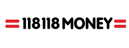

I have been interested in computers since my first Oric 64 that I received as a Christmas gift at six years old and on which I had my first programming experience. This was followed by a number of other computers including Commodore 64 , Amstrad cpc6128, etc. At some point, I decided to build them myself like everybody else at the time, instead of changing computers every six months to a year! It was also much more fun!!!
Around 1992, I had my first experiences on the Internet with my grandfather with Imaginet, Compuserve and AOL. This quickly became a very absorbing and expensive hobby, spending hours and hours connected at night and interacting on Usenet, and other online communities, learning HTML, jumping on the bandwagon of flash, real media player, and anything else I could put my hands on... My interest at the time moved from purely coding to building websites and being involved during my high school and Uni (Tech / MBA) with several startups in the south of France. Finally, I launched the first French law portal ABCjuris.com (there is probably somewhere still some remnants)
I can say that I have always been involved with building products and businesses for as long as I can remember before my professional career started. During my university years, I became interested in business models, tech and interactions related to online communities, social networks and then Web2.0. Today, there is a lot of the same energy in the movement around web3, crypto and blockchains.
There is nothing more exciting than the challenges associated with creating and developing tech businesses/products and working with passionate and talented individuals.
Nowadays, I help organisations understand and respond to their customers’ needs and translate them into viable outcomes by helping to build and scale those companies. This includes building the correct culture, recruiting (product, engineering, data and design teams), setting up the end state structural setup for the stage of growth.
In the last few years, my focus has been to help several organisations with product-market-fit and growth challenges. They have required either a transformation and /or a turnaround initiative. In those situations, there is a need for a different type of energy and motivation. I strongly believe that having a motivated and skilled team is even more important in those moments, alongside understanding the root cause of the issues. Here is an interview with Massive Rocket about this specific topic of transformation.
Lately, I was the Chief Product Officer (CPO) at WonderBill (initially a joint venture between BCG DV and Shell Plc) where I led and rebuilt the product, design, data, and engineering teams. Initial focus was on improving the business and product fundamentals which led to the development of a new proposition leveraging Open Banking to manage household finances and track utilities price rises, etc. in a sector which is now heating up!
A short video explaining the domain we explored at WonderBill.
Previous to WonderBill, I was CPO and Board Member at Concrete Platform (a retail tech company) where I led a business transformation, rebuilding the product, design and engineering teams) and launched a new platform/products into a new market across North America and Europe and upscaled the business. Concrete provides 70+ luxury and premium brands the tools to improve their retail execution and store performance (J.Crew, L'Oreal, Kate Space, Coach, Tiffany's, Vans, Calvin Klein, Tory Burch, etc. ).
Here are several previous organisations, where I worked in senior product leadership positions and launched new products / businesses:



For more information and recommendations, please check my Linkedin .
Outside work, I enjoy exercising using Peloton products, Bikram Yoga, Mountain hiking, Skiing, cycling and running.
I also spend a lot of time learning, reading, advising tech startups, being involved in tech projects - and these days it is very much about machine learning, Blockchain and at time Travel tech.
Thanks for reading!